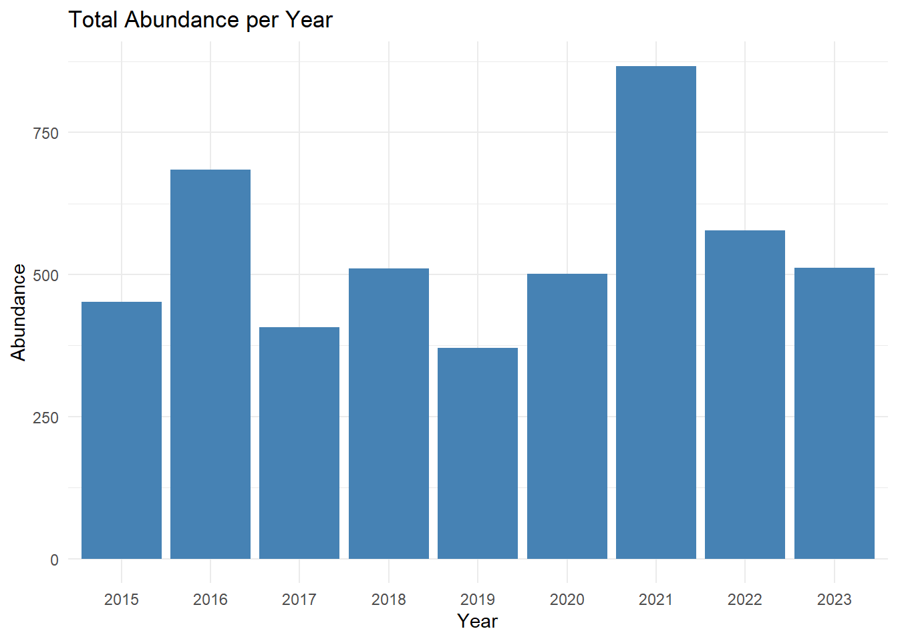
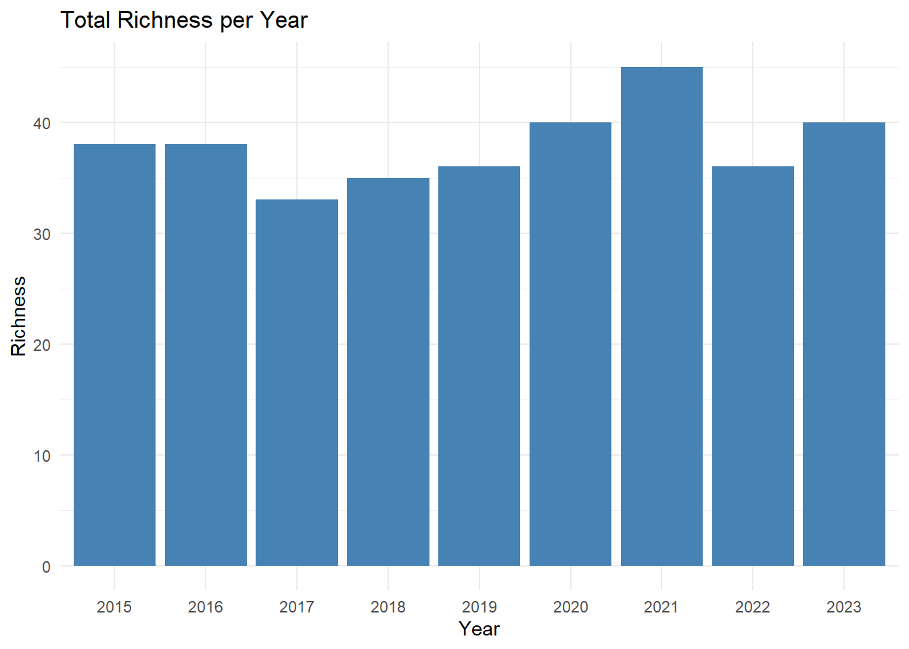

main_folder<-'D:/Documents/UVM Classes/computational_bio/test_2025/OriginalData/NEON_count-landbird/'
print(main_folder)## [1] "D:/Documents/UVM Classes/computational_bio/test_2025/OriginalData/NEON_count-landbird/"subfolders <- list.dirs(main_folder, recursive = F)
print(subfolders)## [1] "D:/Documents/UVM Classes/computational_bio/test_2025/OriginalData/NEON_count-landbird/NEON.D01.BART.DP1.10003.001.2015-06.basic.20250129T000730Z.RELEASE-2025"
## [2] "D:/Documents/UVM Classes/computational_bio/test_2025/OriginalData/NEON_count-landbird/NEON.D01.BART.DP1.10003.001.2016-06.basic.20250129T000730Z.RELEASE-2025"
## [3] "D:/Documents/UVM Classes/computational_bio/test_2025/OriginalData/NEON_count-landbird/NEON.D01.BART.DP1.10003.001.2017-06.basic.20250129T000730Z.RELEASE-2025"
## [4] "D:/Documents/UVM Classes/computational_bio/test_2025/OriginalData/NEON_count-landbird/NEON.D01.BART.DP1.10003.001.2018-06.basic.20250129T000730Z.RELEASE-2025"
## [5] "D:/Documents/UVM Classes/computational_bio/test_2025/OriginalData/NEON_count-landbird/NEON.D01.BART.DP1.10003.001.2019-06.basic.20250129T000730Z.RELEASE-2025"
## [6] "D:/Documents/UVM Classes/computational_bio/test_2025/OriginalData/NEON_count-landbird/NEON.D01.BART.DP1.10003.001.2020-06.basic.20250129T000730Z.RELEASE-2025"
## [7] "D:/Documents/UVM Classes/computational_bio/test_2025/OriginalData/NEON_count-landbird/NEON.D01.BART.DP1.10003.001.2020-07.basic.20250129T000730Z.RELEASE-2025"
## [8] "D:/Documents/UVM Classes/computational_bio/test_2025/OriginalData/NEON_count-landbird/NEON.D01.BART.DP1.10003.001.2021-06.basic.20250129T000730Z.RELEASE-2025"
## [9] "D:/Documents/UVM Classes/computational_bio/test_2025/OriginalData/NEON_count-landbird/NEON.D01.BART.DP1.10003.001.2022-06.basic.20250129T000730Z.RELEASE-2025"
## [10] "D:/Documents/UVM Classes/computational_bio/test_2025/OriginalData/NEON_count-landbird/NEON.D01.BART.DP1.10003.001.2023-06.basic.20250129T000730Z.RELEASE-2025"x <- c()
for (i in 1:10) {
#setwd(subfolders[i])
files<-list.files(path = subfolders[i], pattern = "countdata.*\\.csv$", full.names = TRUE)
x <- c(x, files)
return(x)
}
print(x)## [1] "D:/Documents/UVM Classes/computational_bio/test_2025/OriginalData/NEON_count-landbird/NEON.D01.BART.DP1.10003.001.2015-06.basic.20250129T000730Z.RELEASE-2025/NEON.D01.BART.DP1.10003.001.brd_countdata.2015-06.basic.20241118T065914Z.csv"library(upscaler)
library(dplyr)
library(stringr)
library(ggplot2)
source_batch(folder='Functions/')## File "Functions//CalculateAbundance.R" sourced.
## File "Functions//CalculateRichness.R" sourced.
## File "Functions//CleanData.R" sourced.
## File "Functions//ExtractYear.R" sourced.
## File "Functions//FileLister.R" sourced.
## File "Functions//GenerateHistograms.R" sourced.
## File "Functions//RunRegression.R" sourced.# Read csv for each path in x
# Read all CSVs into a list of data frames
data_list <- lapply(x, read.csv)
library(dplyr)
combined_data <- do.call(rbind, lapply(x, function(path) {
df <- read.csv(path)
df %>%
select(startDate, vernacularName, scientificName, taxonID)
}))
head(combined_data)## startDate vernacularName scientificName taxonID
## 1 2015-06-14T09:23Z Red-eyed Vireo Vireo olivaceus REVI
## 2 2015-06-14T09:23Z Black-throated Green Warbler Setophaga virens BTNW
## 3 2015-06-14T09:23Z Black-throated Green Warbler Setophaga virens BTNW
## 4 2015-06-14T09:23Z Black-and-white Warbler Mniotilta varia BAWW
## 5 2015-06-14T09:23Z Black-capped Chickadee Poecile atricapillus BCCH
## 6 2015-06-14T09:43Z Black-and-white Warbler Mniotilta varia BAWW#Cleaning Data
clean_data<-clean_data()
head(clean_data)## startDate vernacularName scientificName taxonID
## 1 2015 Red-eyed Vireo Vireo olivaceus REVI
## 2 2015 Black-throated Green Warbler Setophaga virens BTNW
## 3 2015 Black-throated Green Warbler Setophaga virens BTNW
## 4 2015 Black-and-white Warbler Mniotilta varia BAWW
## 5 2015 Black-capped Chickadee Poecile atricapillus BCCH
## 6 2015 Black-and-white Warbler Mniotilta varia BAWW#Extracting Year
extract_year()## [1] "2015" "2016" "2017" "2018" "2019" "2020" "2021" "2022" "2023"#Function to calculate abundance
abundance<-calculate_abundance()
print(abundance)## # A tibble: 9 × 2
## startDate count
## <chr> <int>
## 1 2015 452
## 2 2016 684
## 3 2017 407
## 4 2018 510
## 5 2019 371
## 6 2020 501
## 7 2021 867
## 8 2022 577
## 9 2023 512#Function to calculate species richness
richness<-calculate_richness()
print(richness)## # A tibble: 9 × 2
## startDate unique_species
## <chr> <int>
## 1 2015 38
## 2 2016 38
## 3 2017 33
## 4 2018 35
## 5 2019 36
## 6 2020 40
## 7 2021 45
## 8 2022 36
## 9 2023 40#Simple Linear Regression
abundance_richness_df<-merge(richness,abundance,by='startDate')
colnames(abundance_richness_df) <- c("year", "richness",'abundance')
run_regression()##
## Call:
## lm(formula = richness ~ abundance, data = abundance_richness_df)
##
## Coefficients:
## (Intercept) abundance
## 28.63658 0.01706#generate abundance and richness plots
abundance_plot<-ggplot(data = abundance_richness_df, aes(x = factor(year), y = abundance)) +
geom_col(fill = "steelblue") +
labs(title = "Total Abundance per Year",
x = "Year",
y = "Abundance") +
theme_minimal()
abundance_plot
richness_plot<-ggplot(data = abundance_richness_df, aes(x = factor(year), y = richness)) +
geom_col(fill = "steelblue") +
labs(title = "Total Richness per Year",
x = "Year",
y = "Richness") +
theme_minimal()
richness_plot